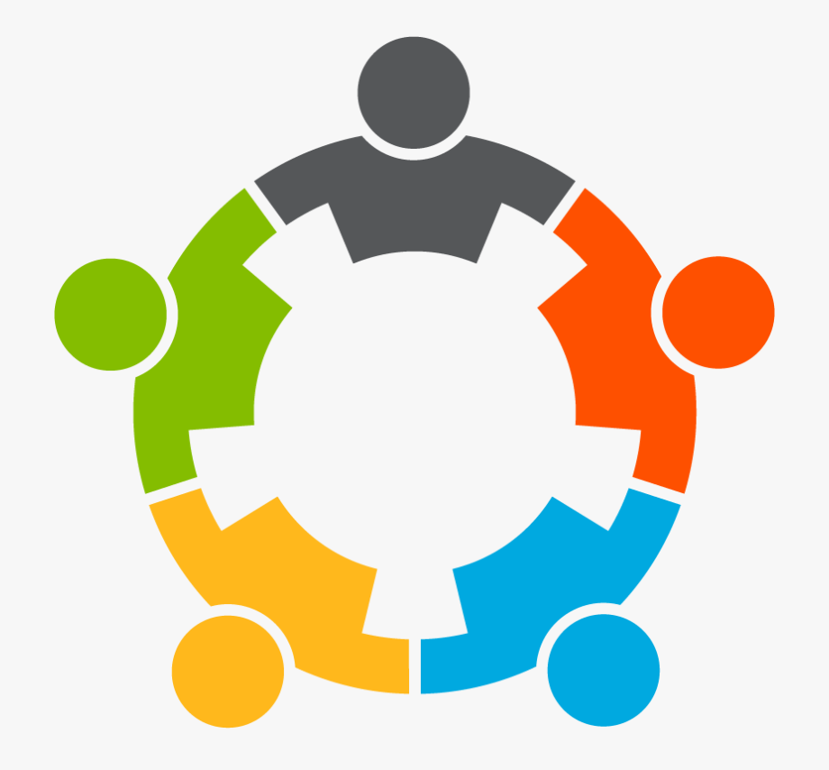

Jordan Fulawka's 4th Work Term Report

Abstract
As the first half of my third placement at Kenna has come to a close,
in this report I will be going in-depth about my experience on the application development team.
I hope to explain not only my responsibilities during this term, but my growth at Kenna
and what has changed during this term compared to my last. I’d like to give an overview of
my contributions and the impact I had on both my team and others, and provide examples of the
outcomes of my efforts. Additionally I’d like to illustrate how the skills and knowledge
I’ve acquired there will benefit me in future endeavours, whether in an academic setting or future employment.
Information about Kenna

Kenna is a dynamic marketing solutions company known for its
extensive collaboration with BASF, a prominent player in the
agricultural industry. However, Kenna's influence extends far
beyond this partnership, encompassing a broad spectrum of services.
Some of the things they offer include insights and analytics,
data management, and cultivating a strong and vibrant brand experience.
Their core mission is to craft a unified and streamlined experience
that is tailored specifically for each of their clientele to meet their
exact needs. A major focal point for Kenna lies in building loyal
customer relationships, which is supported by their motto, "customer first thinking."
As such a diverse organization, Kenna thrives on its ability to cater to a
wide range of needs across several industries.
 Kenna has many teams that all pertain to different parts of computer science.
The team that I am in, which is application development, focuses on
building and maintaining web applications and other tools used by our clients.
Our work involves a mix of frontend and backend development and touches on
everything from UI/UX design to server-side logic. I’ve had the opportunity
to contribute to several projects, gaining hands-on experience with web technologies
and collaborative development workflows. In my previous term, I also helped out with
data-related requests when needed, which gave me useful exposure to how different systems
at Kenna interact and was knowledge that has been very beneficial to me this term.
I’m excited to continue growing on the application development team during my next co-op term.
Kenna has many teams that all pertain to different parts of computer science.
The team that I am in, which is application development, focuses on
building and maintaining web applications and other tools used by our clients.
Our work involves a mix of frontend and backend development and touches on
everything from UI/UX design to server-side logic. I’ve had the opportunity
to contribute to several projects, gaining hands-on experience with web technologies
and collaborative development workflows. In my previous term, I also helped out with
data-related requests when needed, which gave me useful exposure to how different systems
at Kenna interact and was knowledge that has been very beneficial to me this term.
I’m excited to continue growing on the application development team during my next co-op term.
 Some interesting facts about Kenna is that they have worked with many
brands in many different industries since starting in 1985,
when under the name "AppliCan Marketing". Some of these brands
are Mars, Zeneca, Colgate, Rogers, Coca Cola, Molson, and McCormicks.
They initially focused on sales reporting and store merchandising,
before switching to a more digital approach of marketing just before the year 2000.
Some interesting facts about Kenna is that they have worked with many
brands in many different industries since starting in 1985,
when under the name "AppliCan Marketing". Some of these brands
are Mars, Zeneca, Colgate, Rogers, Coca Cola, Molson, and McCormicks.
They initially focused on sales reporting and store merchandising,
before switching to a more digital approach of marketing just before the year 2000.
Goals
Here are my goals for this term:
- Improve my React skills
- Develop a better understanding of how front and back-end systems interact in a full stack application
- Enhance my ability to work effectively in a development team
 My first goal was to develop my ability to build interactive interfaces
by gaining hands-on experience with React. React was something that was
somewhat new to me this term, as I have had minimal experience with it
in previous classes, but overall I would say I was a beginner.
Since I was using it quite extensively every day as part of my responsibilities,
I made it my goal to become proficient in it and be able to build and update
components quickly and effectively. I knew that improving my React skills
would help me contribute more meaningfully to the team’s projects, and also
would improve my employability as it’s a valuable and widely used technology
in the industry. Since the position ideally assumes a solid prior understanding
of React, I was at a bit of a disadvantage at the start, and there weren’t many
onboarding resources specific to the codebase, so I had to learn React largely
on my own as I went. I did this by reading documentation, watching tutorials,
and experimenting directly in the codebase. After a few weeks, things began to
make more sense, and I found myself working more independently and not needing the
resources I once relied on. That said, I continued to ask questions and learn from
my teammates throughout the term, they were always helpful and offered great advice
on best practices. I felt I had achieved my goal once I was able to take on tasks
involving React features with little to no assistance and contribute to key parts
of our application. My team was even able to rely on me to finish features that had
a tight deadline, which felt great and made me actually feel like an integral part
of the team. Overall, I really enjoyed working with React and I’m glad I had the
opportunity to gain hands-on experience with it.
My first goal was to develop my ability to build interactive interfaces
by gaining hands-on experience with React. React was something that was
somewhat new to me this term, as I have had minimal experience with it
in previous classes, but overall I would say I was a beginner.
Since I was using it quite extensively every day as part of my responsibilities,
I made it my goal to become proficient in it and be able to build and update
components quickly and effectively. I knew that improving my React skills
would help me contribute more meaningfully to the team’s projects, and also
would improve my employability as it’s a valuable and widely used technology
in the industry. Since the position ideally assumes a solid prior understanding
of React, I was at a bit of a disadvantage at the start, and there weren’t many
onboarding resources specific to the codebase, so I had to learn React largely
on my own as I went. I did this by reading documentation, watching tutorials,
and experimenting directly in the codebase. After a few weeks, things began to
make more sense, and I found myself working more independently and not needing the
resources I once relied on. That said, I continued to ask questions and learn from
my teammates throughout the term, they were always helpful and offered great advice
on best practices. I felt I had achieved my goal once I was able to take on tasks
involving React features with little to no assistance and contribute to key parts
of our application. My team was even able to rely on me to finish features that had
a tight deadline, which felt great and made me actually feel like an integral part
of the team. Overall, I really enjoyed working with React and I’m glad I had the
opportunity to gain hands-on experience with it.
Another goal I had this term was to develop a clear understanding of how
front-end and back-end systems interact by working on full stack features,
from implementing UI components to integrating APIs and handling database
operations. To work towards this, I actively took on tasks that involved
both sides of the stack, using React on the front-end and Node.js on the
back-end. I made an effort to study how the different parts of the
application connect, including routes, services, and controllers, as
well as how APIs are designed and how database queries are structured.
This gave me a much deeper appreciation for the full workflow of a feature
and the reasoning behind certain design decisions. My goal was to be able
to implement a complete feature from start to finish with minimal guidance,
and to clearly explain how data moves through the system. By the end of
the term, I was able to do exactly that, taking ownership of a small
feature that required updates across the front-end, API, and database
layers. Specifically, the feature involved uploading an excel file on
the front-end of a website, and then having this excel file actually be
inserted into SQL tables in the back-end. I worked on this feature
completely alone and I would consider it a big success as it worked
well and was a core feature of the project I was working on. This experience
helped me solidify my understanding of full-stack development, and I
feel much more confident in my navigating and contributing to all parts
of a web application.

My final goal I set for this term was to enhance my ability to
work effectively in a development team by improving my communication,
task coordination, and participation in the team’s workflow. To achieve this,
I made a point of contributing regularly in our weekly team meetings, asking
clarifying questions when needed, and actively collaborating with teammates
whenever possible. I also focused on improving my technical communication by
practicing clear documentation in my code and following Git best practices,
such as writing meaningful commit messages and managing branches properly.
These habits helped me stay organized and made it easier for others to understand
and work with my contributions. My measure of success for this goal was to receive
positive feedback on my collaboration skills and to avoid creating workflow blockers
for the team, which was met during my end-of-term check-in with my manager where
he complimented my skills in working with others. By the end of the term, I felt
much more confident in how I communicated and coordinated with others, and I
was able to contribute to the team’s progress without causing delays. Overall,
I found that putting effort into teamwork not only helped the project run
more smoothly, but also made the experience more enjoyable and rewarding.
I feel like I have gotten as close as I can to completing these goals
during my work term. This placement at Kenna has really helped me
gain confidence in my skills and show me I have what it takes to work
as a developer. I look forward to seeing how I can apply what
I’ve learnt here to other endeavours in my life.
My Role at Kenna
 My job title at Kenna for this term was an Application Developer.
My primary responsibility was working on internal and client-facing
web applications using JavaScript and React. These applications
provide a wide range of services to our clients, from data entry
and reporting tools, to interfaces for managing campaigns and
contests. I contributed to building new features from the ground
up, improving existing components, and ensuring that our
applications were both functional and user-friendly.
My job title at Kenna for this term was an Application Developer.
My primary responsibility was working on internal and client-facing
web applications using JavaScript and React. These applications
provide a wide range of services to our clients, from data entry
and reporting tools, to interfaces for managing campaigns and
contests. I contributed to building new features from the ground
up, improving existing components, and ensuring that our
applications were both functional and user-friendly.
Much of my work also involved interacting with the backend,
particularly when implementing full-stack features. This
meant working with Node.js, writing and updating API routes,
and interacting with the database to retrieve, insert, or manipulate
data as needed. I gained experience with SQL queries and backend
logic that ensured the front-end displayed accurate and up-to-date information.
Another key part of my role was addressing issues that
arose during QA testing. I was responsible for reproducing bugs,
finding the root cause, and implementing fixes in both the front-end
and back-end code. This process helped reinforce my understanding
of the entire application stack and improve my debugging skills significantly.
In addition to project work, I was able to see the workflow of
an application from the early planning stages to the final implementation.
I learnt how to write clean, maintainable code, learn to collaborate
with other developers, and follow Git best practices like proper commit
messages and branch management. Overall this role gave me the opportunity
to contribute to real-world applications used by both clients and internal
users, while deepening my technical skill across both front-end and back-end
development.
Conclusion
I hope this report has shed some light on my experiences
with Kenna and the impact they have had on me both personally
and professionally during my short time here. I'd like to
quickly review the most important parts of this report:
Kenna is a marketing solutions company that works primarily
with BASF to deliver a wide variety of services to help improve
both the internal workings of the company, as well as the external
customer experience. I work on the development team, where I work
on the reports we show to stakeholders and ensure they run
correctly and show accurate information.
The goals I set out during this term were to develop my
abilities with React, gain a clear understanding of the
interaction between the front-end and back-end of a full stack
application, and learn how to better work in a development team.
I believe I have made big steps towards these goals and have no
doubt will continue to improve as I embark on the latter half of
this co-op and future academic and professional pursuits. This work
term has been a big success so far and I’m grateful I’ve had the
opportunity to learn all of these new things.
Thanks for reading!
Acknowledgment
I’d like to give acknowledgement to my manager Nicholas. Nicholas
has given me so much freedom in what I want to work on and has given
me countless opportunities to explore things that I am interested in.
I’m very lucky to have him as my manager and is a big reason why this
co-op term has been so enjoyable.